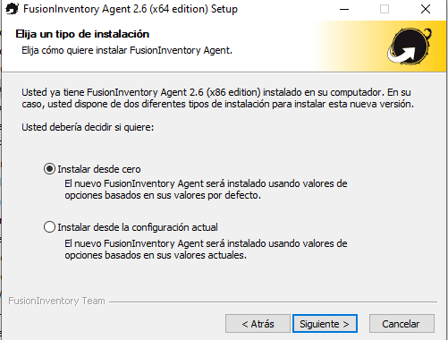
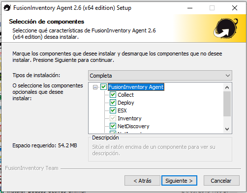
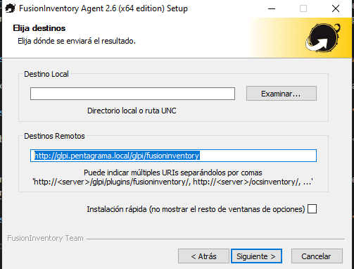
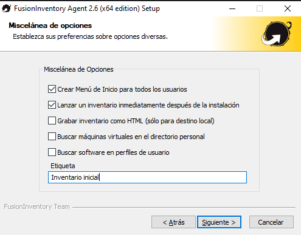

Paso 1: Descargar el Instalador
Accede a la siguiente ruta \\server12\software\ ahí buscas el instalador FusionInventory.

Paso 2: Ejecutar el Instalador
Una vez descargado, haz doble clic en el archivo para iniciar el asistente de instalación. Acepta los términos y condiciones.
Paso 3: Configuración Inicial
Selecciona la ruta de instalación por defecto y presionas "siguiente", para asegurar la Configuración correcta, se debe marcar la opción "Instalar desde cero" como se muestra en la imagen y presionar "siguiente".
A continuación debes seleccionar todas las casillas, como se muestra en la imagen
En la siguiente pantalla, debes dejar la ruta que aparece por defecto y presionar "siguiente"
En la siguiete pantalla, debes ingresar cualquiera de las siguientes rutas: http://glpi.pentagrama.local/glpi/fusioninventory o http://192.168.100.23:8200/glpi/fusioninventory
En las siguientes cuatro pantallas, debes dejar todo por defecto y presionar "siguiente"
Posteriormente, debes asegurar que las dos primeras casillas esten marcadas, y en el campo "etiqueta" debes escribir "Inventario inicial" Presionar en "siguiente" para continuar
Y para finalizar, presionas "siguiente" en las siguientes panta hasta finalizar